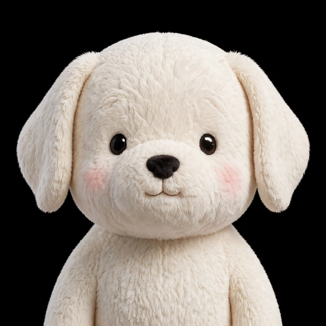
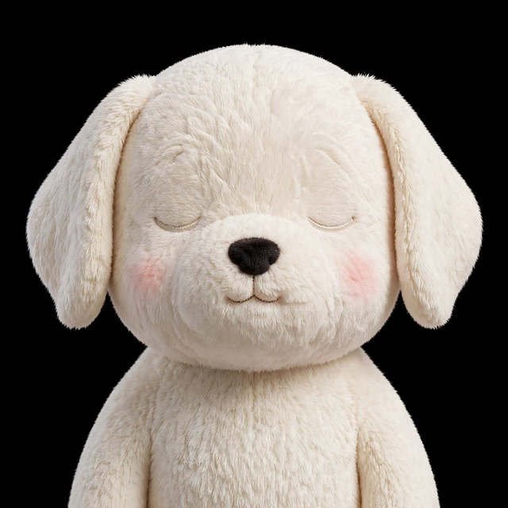

Document in, place kept, resume anywhere.
A read-aloud reader that remembers where you stopped — across your devices.
Already reading on our sites — the dogear reader is built into every article,
so the sites promote dogear just by being read.
SCROLL · DEEP LISTENING BELOW
This is the dogear app skin — Ether mode, tuned for the throat chakra and the parasympathetic nervous system. Deep indigo nightfall, aquamarine sound-energy, type that never glares. Press play: the waveform below breathes at a coherent 5.5-second rhythm while the reader keeps your place.
Listening is a different kind of reading. The eyes rest, the shoulders drop, and the mind follows the voice instead of chasing the line. Dogear is built for that shift — from visual fatigue to auditory absorption.
Your place is kept per page, on this device, with no account and no tracking. Leave mid-paragraph and come back tomorrow: the reader offers your exact spot, down to the sentence, and resumes where your attention left off.
Six tokens, one nervous system. Dark backgrounds mimic nightfall and lower cortisol; cyan-family accents carry the expressive energy of sound; nothing on screen ever glares.
#060B1E#062A2E#6FF2DC#57E6FF#E9F2F1#A9C3C9